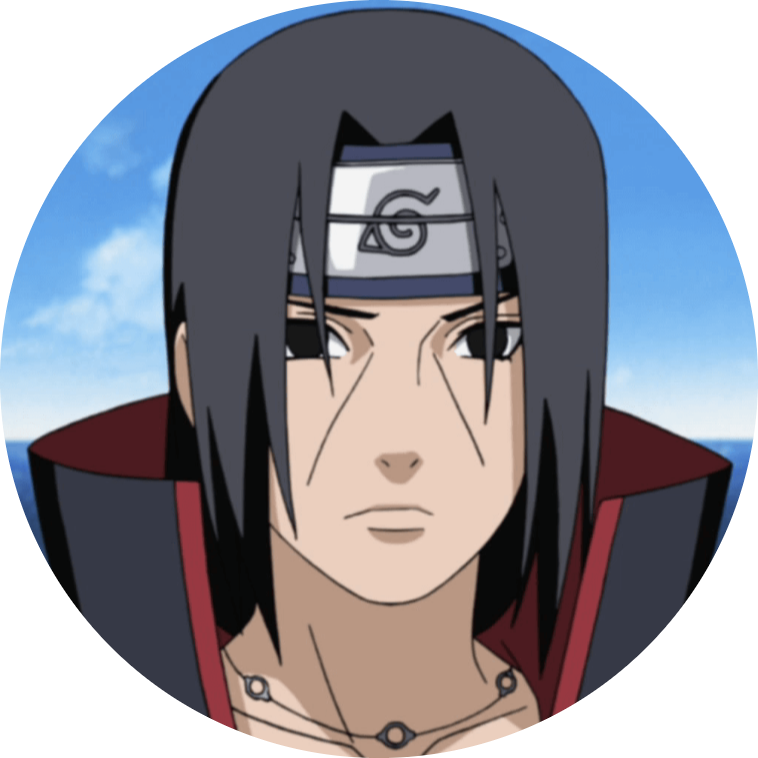

|  |
Itachi UchihaMember of Uchiha clan. Itachi Uchiha (うちはイタチ, Uchiha Itachi) was a shinobi of Konohagakure's Uchiha clan who served as an Anbu Captain. |
| Manga | Volume #16, Naruto Chapter #139 |
| Anime | Naruto Episode #80 |
| Novel | Akatsuki Hiden: Evil Flowers in Full Bloom |
| Movie | Road to Ninja: Naruto the Movie |
| Game | Naruto: Ultimate Ninja 2 |
| OVA | Hidden Leaf Village Grand Sports Festival! |
| Appears in | Anime, Manga, Novel, Game, Movie |